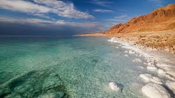
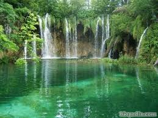

INICIO
Distribución del agua en el planeta
Porcentaje Total de Agua en la Tierra
El agua cubre aproximadamente el 70% de la superficie terrestre.
Sin embargo, la mayoría de esta agua es salada y no apta para consumo humano o uso agrícola
Agua Salada (Océanos y Mares)
Porcentaje del total del agua: 97.5%
Descripción: La mayor parte del agua en la Tierra se encuentra en los océanos y mares, siendo salada y,
por lo tanto, no directamente utilizable para consumo humano o riego agrícola.

Agua Dulce (Apta para Consumo y Uso Humano)
Porcentaje del total del agua: 2.5%

Disponibilidad de Agua Dulce para el Ser Humano
Porcentaje del total del agua: Aproximadamente el 0.025% del agua en la Tierra es accesible y apta para consumo humano directo.
Implicaciones: Esta limitada disponibilidad subraya la importancia de conservar y gestionar eficientemente los recursos hídricos disponibles.